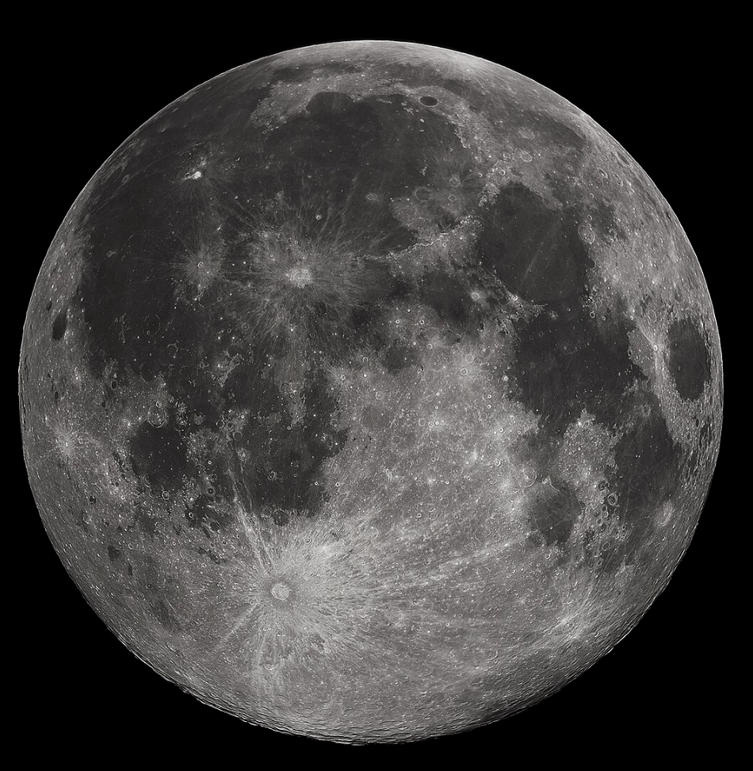

The Sun rules over Leo. Symbolizing vitality, strength, and
the ability to shine, it represents a person's core identity,
ego, and sense of self. The Sun governs a person's personality,
sense of self, and natural inclinations, as well as confidence,
ego, and ability to assert yourself and overcome challenges. It
also relates to the overall vitality, energy, and overall physical
health. The Sun also rules leadership qualities, and inspires
taking charge and leading with integrity. A strong Sun can
indicate charisma, optimism, and a commanding presence, while
a weak or afflicted Sun can manifest as arrogance, jealousy,
or anger. It's also associated with father figures and mentors.
The Moon

The Moon rules cancer. It represents your emotional world,
inner self, and how you instinctively react to situations.
The primary association of the Moon is in the emotional landscape,
where it governs your moods, feelings, and and how you process them.
It also represents your private "inner" self. The Moon also governs
your gut feelings, intuition, and ability to habitual responses
to situations. It has significance in the capacity to nurture,
your need for emotional security, and how you care for yourself
and others. The Moon is associated with feminine, receptive,
and nurturing aspects of life, and represents mother figures.
Mercury
Ruling planet of Gemini and Virgo, Mercury is associated
with communication, intellect, and adaptability. It influences
how we read, write, and interact with others. It also governs our
mental processes including our ability to learn, analyze, and
problem solve. A well-placed Mercury can bring intelligence,
quick wit, and effective communication. However, a poorly placed
Mercury can lead to restlessness, superficiality,
or communication difficulties.
Venus
Venus is the ruling planet for Taurus and Libra. It's domain
is love, beauty, harmony, and relationships. it reveals how
we approach relationships due to its involvement in love,
romance, and attraction. It also governs our appreciation for
beauty in all forms, and seeks for harmony and balance in life.
Venus is often associated with feminine grace, beauty, and charm.
Mars
Mars is the ruling planet for Aries and Scorpios. It represents
energy, action, desire, and assertiveness. It symbolizes the force
that propels us forward, whether in work, relationships, or personal
ambitions and influences how boldly and direct a desire is pursued. Mars
also rules aggression, competition, potential for conflict, and
signifies bravery, determination, and ability to overcome. Mars
can be a force for good, bringing bravery, assertiveness, and a
strong sense of purpose. However, it can also lead to impatience,
rashness, and conflict.
Jupiter
Ruling planet for Pisces (alongside Neptune) and Sagittarius, Jupiter
is associated with expansion, growth, luck, abundance, and wisdom.
It also signifies optimism, generosity, and a desire for learning
and exploration. Jupiter is associated with luck and good outcomes,
and signifies increases in resources, opportunities, and holistic
health. It also encourages both personal and spiritual growth.
Jupiter represents a thirst for knowledge, higher learning, and
philosophical understanding. It's also linked to a generous,
optimistic view in life and a deep connection to religious beliefs.
However, Jupiter can also be linked to overindulgence, overspending,
blind optimism, extravagance, and lack of responsibility.
Saturn
Ruling planet of Capricorn and historically ruling Aquarius,
Saturn is associated with discipline, responsibility, limitations,
and structure. It governs careers, long-term goals, and structures.
It encourages us to be disciplined, organized, and aids in creating
structure. It peaks our sense of responsibility and encourages
accountability for actions. Saturn teaches the value of patience
and perseverance, and shows that success comes from hard work and
effort. It encourages maturity and wisdom, thus creating a sense of
practicality and realism to make sound decisions. Saturn may bring
feelings of restriction, and is also associated with anxiety, rigidity,
and pessimism.
Uranus
Uranus is the modern-day ruler of Aquarius. It is associated with
sudden changes in innovation, rebellion, and disruption. Unpredictability
and sudden shifts are associated with this planet. It inspires a desire
to challenge authority, fostering a spirit of reform and revolution.
Uranus is strongly associated with scientific innovations, technological
breakthroughs, and futuristic thinking. It encourages a departure
from conformity while also being linked to collective consciousness
and social movements. It also elaborates on eccentric tendencies
and encourages intuitive insights and higher levels of consciousness.
Uranus can bring about positive changes, but it can also cause mass chaos.
Neptune
Neptune rules Pisces beside Jupiter. This planet is associated with
dreams, intuitions, insights, and creativity. It rules the subconscious
mind, giving rise to creativity, fantasy, and visionary thinking.
It is also strongly linked to spirituality, intuition, and connection
to something larger than ourselves. Neptune is also associated with
universal love and compassion. It can also create illusions, dissolving
the lines between what's real and imaginary, but also dissolves
boundaries between emotions, creating a sense of interconnectedness.
Neptune is closely linked to the arts and has a large influence in music,
photography, and film. It can also lead to confusion and escapism,
leading many to substance abuse. When Neptune transits, it can
bring periods of heightened intuition, spiritual awakening, and
creative inspiration. However, during transit it can also bring
confusion, disillusionment, or a tendency to idealize.
Pluto
Pluto rules Scorpio alongside Mars. Pluto is associated with intense
transformation, power, control, and the subconscious. It represents
radical change and encourages the shedding off of old ways and embracing
the new. It also explores dynamics of power, and can highlight issues of
control, manipulation, and dominion. This planet dives into the subconsious,
bringing unconscious patterns and hidden motives to light. Pluto can
also manifest as intense focus, obsessive tendencies, and deep searches
to uncover truth. It is also linked to taboo topic such as the hidden
aspects of life, and darker parts of human nature.